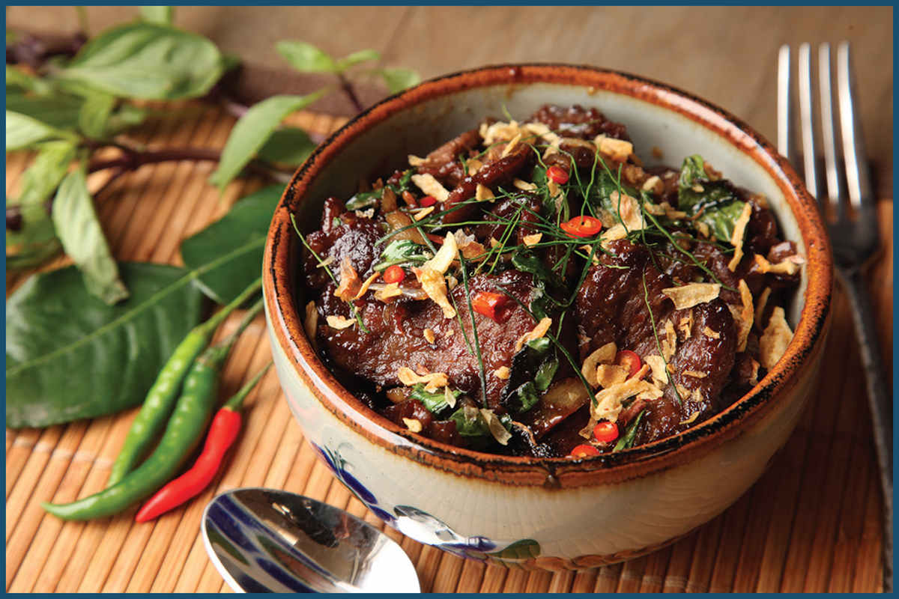
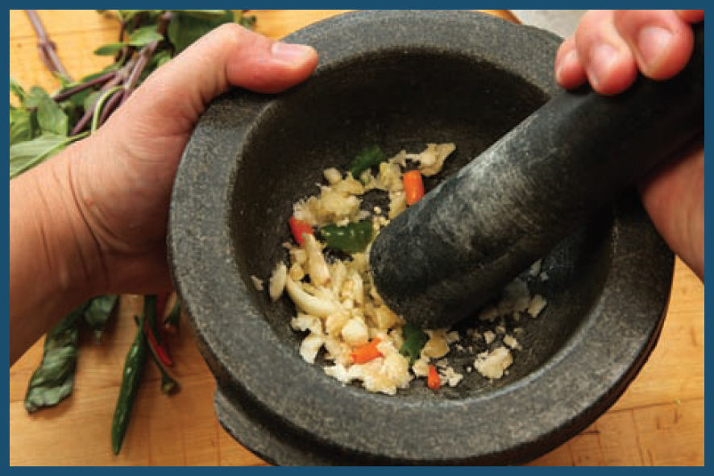
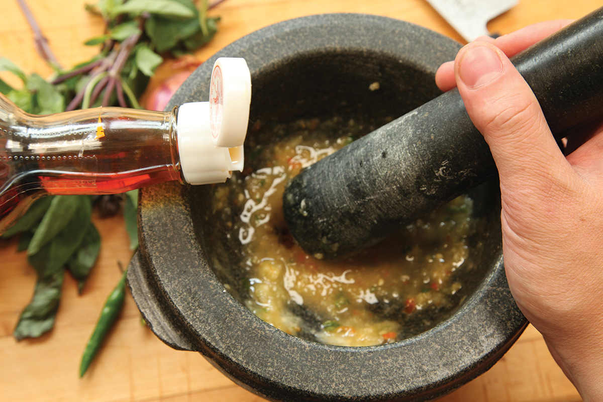
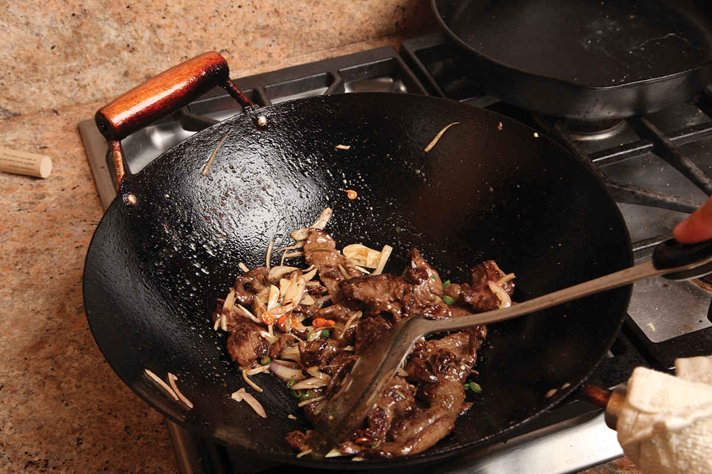
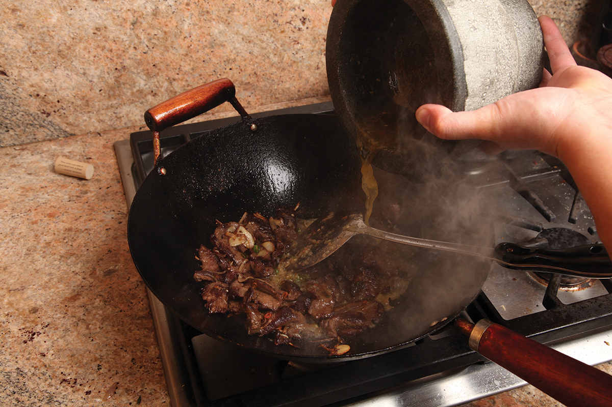
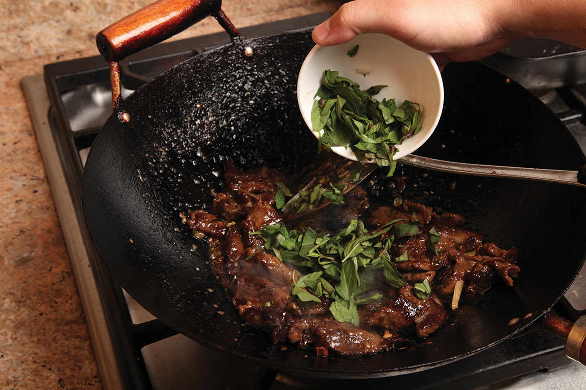

THAI-STYLE BEEF WITH BASIL AND FISH SAUCE
This Thai stir-fry starts, as do most of my kitchen projects, with my favorite tool, the mortar and pestle, which I use to pound garlic, chiles, and palm sugar into a fine paste, which I loosen up with some fish sauce. This mixture (essentially a garlic-heavy Nam Pla Prik, here) is the sauce for the stir-fry.
Next I marinate sliced beef in a modified basic beef marinade—baking soda, fish sauce, soy sauce, and a bit of sugar—before stir-frying it in two batches in a hot wok. Once both batches of beef are browned, I wipe out the wok and reheat it for the final steps of the stir-fry. The beef goes back in, along with sliced aromatics—shallots, more garlic, and more chiles. (Yep, we’re doubling up on chile and garlic flavor here—the sliced version of each has a different flavor from the pounded version.) Traditional versions of this dish don’t typically contain makrut* lime leaf, but I love the aroma of citrus leaves, so I often add some. You can find makrut lime leaf frozen at some well-stocked Asian supermarkets, but if you can’t find it, head to a good greengrocer during citrus season and pluck some citrus leaves out of the display bins. I’ve found the most success with tangerine or clementine leaves.





As soon as my aromatics are, well, aromatic, and my beef is as browned as I’d like it to be, I add in the chile/garlic sauce. It should very rapidly reduce to a thin glaze (we’re going for moist-but-not-saucy here). A big ol’ handful of Thai purple basil goes into the wok, and a couple of tosses later we’ve got dinner on the table in about 15 minutes. This is just one of the many reasons I love my wok.
*For a long time, Citrus hystrix, the wrinkly green lime whose leaves and zest lend their flavor to many dishes in Southeast Asia, was known as “kaffir lime,” a term I write out now only for the sake of clarity. Unfortunately, that K-word is used as a racial slur against black South Africans, the equivalent of the N-word in America. The etymology of the two words—the racial epithet and the fruit—is different, but nonetheless I see no good reason to continue using the term when makrut, its name in Thai, will work just as well.